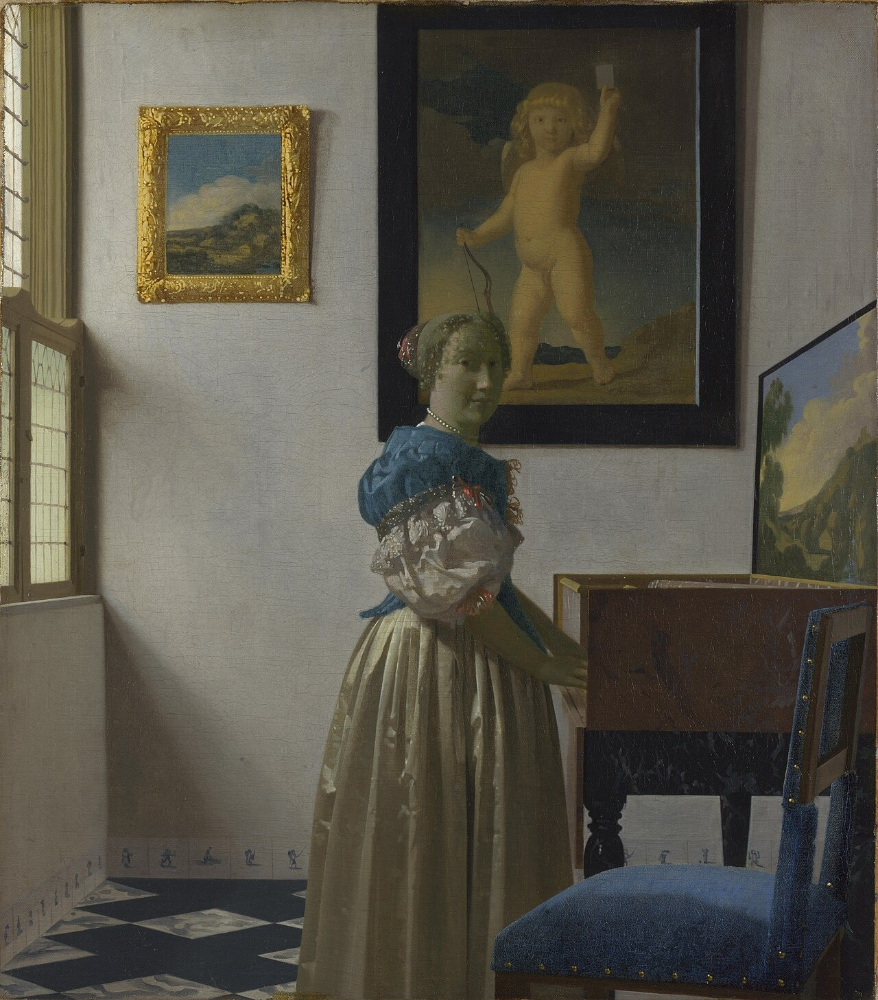

站在维金纳琴前的年轻女子 A Young Woman standing at a Virginal
维米尔 · 约1670–72年 · 伦敦国家美术馆
Johannes Vermeer · About 1670–2 · The National Gallery, London
图片：Wikimedia Commons，公有领域 / Image: Wikimedia Commons, public domain

发现 · Discover
她在看我们 She looks at us
琴前的年轻女子转过头，直直地看着我们，好像停下来要和我们说话。
The young woman at the keyboard turns and holds our gaze, as if she has paused to speak to us.
空椅子 The empty chair
旁边有一把空椅子，说明她可能在等人。
Beside her is an empty chair, suggesting she may be expecting someone.
丘比特 Cupid
墙上那幅大画里，是爱神丘比特，右手拿弓，左手高高举着一张纸牌。
In the large painting on the wall is Cupid, god of love, holding a bow in his right hand and raising a card in his left.
只有一个 Only one
丘比特的图案来自一本著名的寓意画集，标题就叫“只有一个”，配诗赞美爱情里的忠贞。
The Cupid motif comes from a well-known emblem book titled “Only One”, with a verse praising fidelity in love.
维金纳琴 The virginal
这是一架很豪华的维金纳琴。在荷兰绘画里，音乐常和爱情联系在一起，维金纳琴尤其象征纯洁的爱。
This is a particularly luxurious virginal. In Dutch painting music was often linked to love, and the virginal especially to pure love.
两幅风景 Two landscapes
琴盖里画着一片风景，被认定是代尔夫特画家赫罗内韦亨的作品。墙上金框里那幅小风景，也来自同一幅画。
The landscape inside the lid has been identified as a painting by the Delft artist Pieter Groenewegen. The small landscape in the gilt frame on the wall derives from the same painting.
富有的房间 A wealthy room
丝绸、珍珠、金色画框、天鹅绒椅面，都显示出她的富有。
The silks, pearls, gilded frame and velvet chair all show her wealth.
故事 · The story
ACT I 第一幕 · 一个明亮的房间 A bright room
大约1670年，维米尔画下了一位站在维金纳琴前的年轻女子。从画法和她的服装来看，这是维米尔晚期的作品。
Around 1670, Vermeer painted a young woman standing at a virginal. The style and her costume show that it is a late work.
约1670–72年 · 伦敦国家美术馆 / About 1670–2 · The National Gallery, London
ACT II 第二幕 · 画中画 Paintings within the painting
维米尔常用画中的画来暗示含义。这里，丘比特举着写有“只有一个”的纸牌，空椅子暗示她在等人，一切都指向忠贞的爱。
Vermeer often used paintings within his paintings to hint at meaning. Here Cupid raises a card reading “Only one”, and the empty chair suggests she is waiting: everything points to faithful love.
约1670–72年 · 伦敦国家美术馆 / About 1670–2 · The National Gallery, London
ACT III 第三幕 · 一对画？ A pair?
伦敦国家美术馆还有一幅维米尔的《坐在维金纳琴前的年轻女子》，画于同一时期。很多人猜测，这两幅画原本是一对。
The National Gallery also has Vermeer's A Young Woman seated at a Virginal, from the same period. Many have speculated that the two were made as a pair.
约1670–72年 · 伦敦国家美术馆 / About 1670–2 · The National Gallery, London
只有一个。 Only one.
作品档案 · Artwork record
| 画家（生卒年） · Artist (dates) | 约翰内斯·维米尔（1632–1675） / Johannes Vermeer (1632–1675) |
|---|---|
| 画名 · Title | 站在维金纳琴前的年轻女子 / A Young Woman standing at a Virginal |
| 年份 · Date | 约1670–72年 / About 1670–2 |
| 材质 · Medium | 布面油画 / Oil on canvas |
| 尺寸 · Dimensions | 51.7 × 45.2 cm |
| 收藏地 · Collection | 伦敦国家美术馆（编号 NG1383） / The National Gallery, London (NG1383) |
关于画家 · About the artist
约翰内斯·维米尔（1632–1675），荷兰画家，一生都在代尔夫特生活和创作。他留下的画作只有约35幅，以描绘室内的光线著称。
Johannes Vermeer (1632–1675) was a Dutch painter who lived and worked in Delft all his life. Only about 35 of his paintings survive, famous for their rendering of light in quiet interiors.
更多维米尔的画 · More by Johannes Vermeer